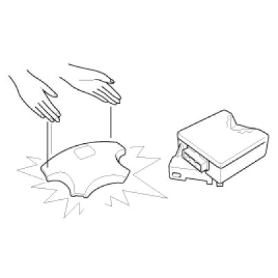
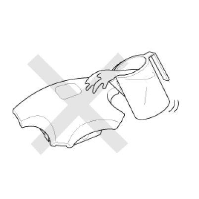
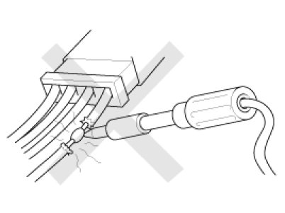
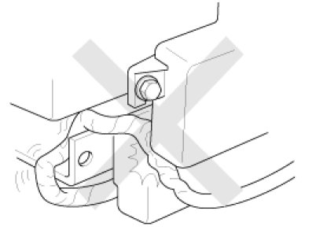
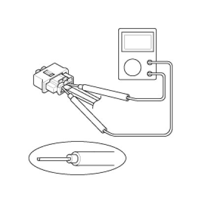
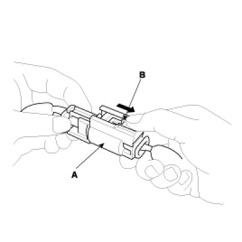
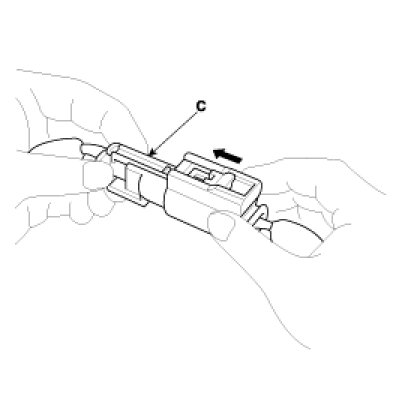

Restraints and Safety Systems: Service Precautions
Precautions
General Precautions
Please read the following precautions carefully before performing the airbag system service.
Observe the instructions described in this manual, or the airbags could accidentally deploy and cause damage or injuries.
- Except when performing electrical inspections, always turn the ignition switch OFF and disconnect the negative cable from the battery, and wait at least three minutes before beginning work.
NOTE:
The contents in the memory are not erased even if the ignition switch is turned OFF or the battery cables are disconnected from the battery.
- Use the replacement parts which are manufactured to the same standards as the original parts and quality.
Do not install used SRS parts from another vehicle. Use only new parts when making SRS repairs.
- Carefully inspect any SRS part before you install it. Do not install any part that shows signs of being dropped or improperly handled, such as dents, cracks or deformation.

- Before removing any of the SRSCM parts (including the disconnection of the connectors), always disconnect the SRSCM connector.
Airbag Handling and Storage
Do not disassemble the airbags; it has no serviceable parts. Once an airbag has been deployed, it cannot be repaired or reused.
For temporary storage of the air bag during service, please observe the following precautions.
- Store the removed airbag with the pad surface up.
- Keep free from any oil, grease, detergent, or water to prevent damage to the airbag assembly.

- Store the removed airbag on secure, flat surface away from any high heat source (exceeding 85 C/185 F).
- Never perform electrical inspections to the airbags, such as measuring resistance.
- Do not position yourself in front of the airbag assembly during removal, inspection, or replacement.
- Refer to the scrapping procedures for disposal of the damaged airbag.
- Be careful not to bump or impact the SRS unit or the side impact sensors or front impact sensors whenever the ignition switch is ON, wait at least three minutes after the ignition switch is turned OFF before begin work.
- During installation or replacement, be careful not to bump (by impact wrench, hammer, etc.) the area around the SRS unit and the side impact sensor and the front impact sensors. The airbags could accidentally deploy and cause damage or injury.
- Replace the front airbag module, SRSCM, FIS when the front airbag is deployed. Replace the airbag wiring when the airbag wiring get damaged. Replace the side airbag module, the curtain airbag module, SRSCM, SIS when deploying the side airbag. Replace the airbag when the airbag wiring get damaged.
- After a collision in which the airbags or the side air bags did not deploy, inspect for any damage or any deformation on the SRS unit and the side impact sensors. If there is any damage, replace the SRS unit, the front impact sensor and/or the side impact sensors.
- Do not disassemble the SRS unit, the front impact sensor or the side impact sensors.
- Turn the ignition switch OFF, disconnect the battery negative cable and wait at least three minutes before beginning installation or replacement of the SRS unit.
- Be sure the SRS unit, the front impact sensor and side impact sensors are installed securely with the mounting bolts.
- Do not spill water or oil on the SRS unit, or the front impact sensor or the side impact sensors and keep them away from dust.
- Store the SRS unit, the front impact sensor and the side impact sensors in a cool (15 - 25 C/ 59 - 77 F) and dry (30 - 80% relative humidity, no moisture) area.
Wiring Precautions
SRS wiring can be identified by special yellow outer covering Observe the instructions described in this section.
- Never attempt to modify, splice, or repair SRS wiring. If there is an open or damage in SRS wiring, replace the harness.

- Be sure to install the harness wires so that they are not pinched, or interfere with other parts.

- Make sure all SRS ground locations are clean, and grounds are securely fastened for optimum metal-to-metal contact. Poor grounding can cause intermittent problems that are difficult to diagnose.
Precautions for Electrical Inspections
- When using electrical test equipment, insert the probe of the tester into the wire side of the connector.
Do not insert the probe of the tester into the terminal side of the connector, and do not tamper with the connector.

- Use a u-shaped probe. Do not insert the probe forcibly.
- Use specified service connectors for troubleshooting.
Using improper tools could cause an error in inspection due to poor metal contact.
Spring-loaded Lock Connector
Some SRS system connectors have a spring-loaded lock.
Airbag Connector
Disconnecting
To release the lock, pull the spring-loaded sleeve (A) and the slider (B), while holding the opposite half of the connector.
Pull the connector halves apart. Be sure to pull on the sleeve and not on the connector half.

Connecting
Hold both connector halves and press firmly until the projection(C) of the sleeve-side connector clicks to lock.
